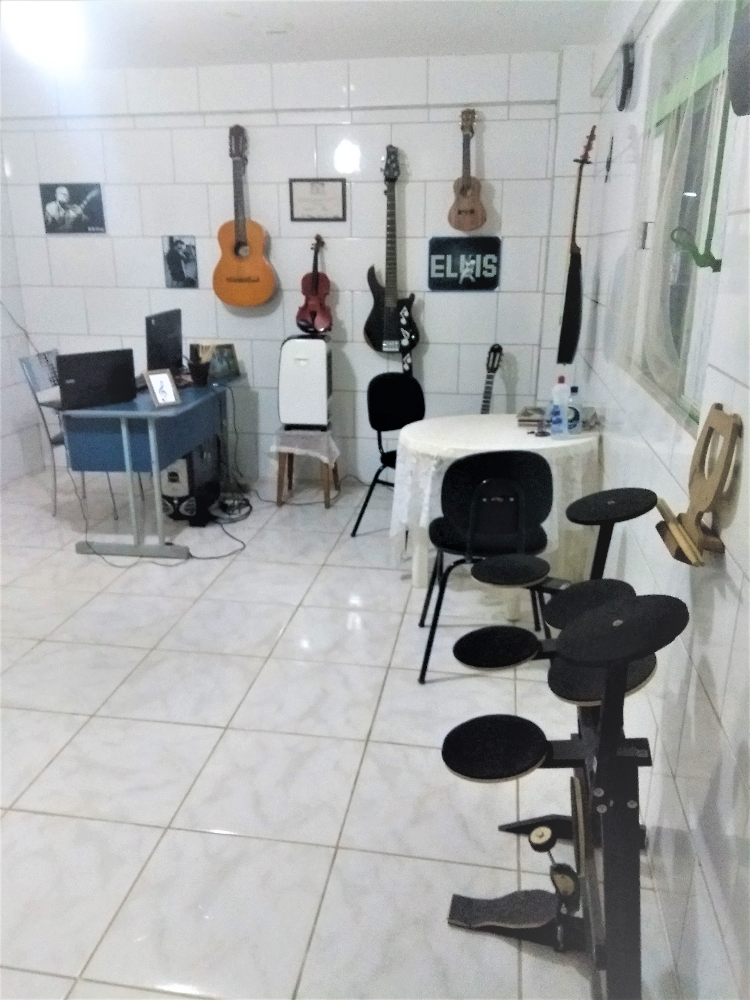
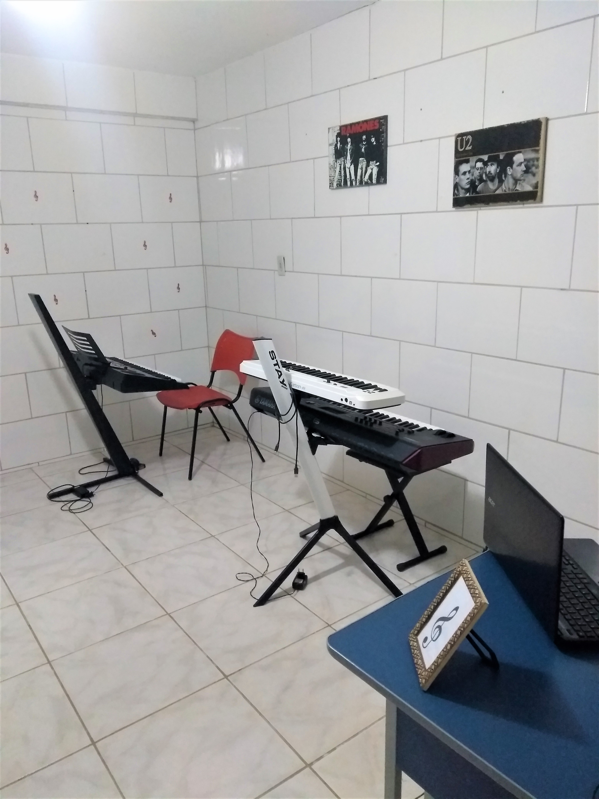
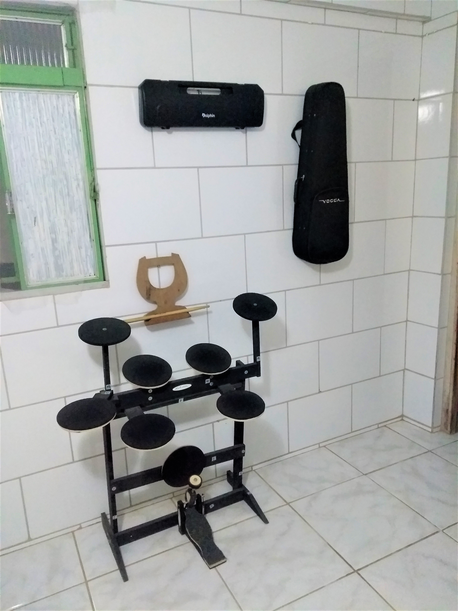

O Centro de Ensino Musical Silva foi inaugurado em 2010,por onde passaram vários alunos.Muitos deles,atualmente,estão trabalhando profissionalmente com a música. Outros estão tocando em
igrejas e alguns apenas por hobby.
Todos os cursos abordam conceitos e práticas que vão desde o iniciante ao avançado.
As aulas são ministradas de forma individual ( 1 aluno de cada vez ). Com isso, a produtividade
dos alunos são bem maiores e o ritmo do curso segue de acordo com o desevenvolvimento de cada um.
O centro de ensino já encontra-se equipado com todos os instrumentos para os cursos, ficando a critério
dos alunos, a decisão de levar seu próprio instrumento para as aulas.